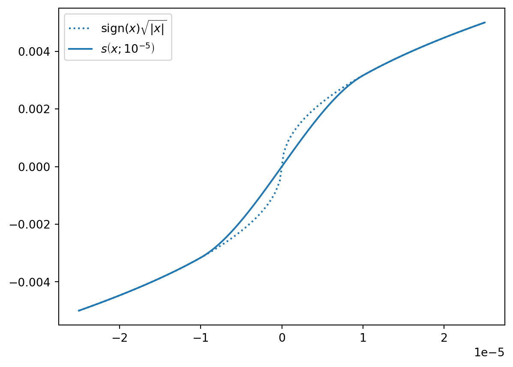

The ManningResistance node calculates a flow rate between two Basins based on their water levels. The flow rate is calculated by conservation of energy and the Manning-Gauckler formula to estimate friction losses.
1 Tables
1.1 Static
column
type
unit
restriction
node_id
Int32
-
length
Float64
\(\text{m}\)
positive
manning_n
Float64
\(\text{s} \text{m}^{-\frac{1}{3}}\)
positive
profile_width
Float64
\(\text{m}\)
positive
profile_slope
Float64
-
-
control_state
String
-
(optional)
2 Equations
ManningResistance simulates steady flow between Basins through a reach described by a trapezoidal profile and a Manning roughness coefficient.
We describe the discharge from Basin \(a\) to Basin \(b\) solely as a function of the water levels in \(a\) and \(b\).
\[
Q = f(h_a, h_b)
\]
Where:
The subscripts \(a\) and \(b\) denotes two different Basins
\(h\) is the hydraulic head, or water level
The energy equation for open channel flow is:
\[
H = h + \frac{v^2}{2g}
\]
Where:
\(H\) is total head
\(v\) is average water velocity
\(g\) is gravitational acceleration
The discharge \(Q\) is defined as:
\[
Q = Av
\]
where \(A\) is cross-sectional area.
We use conservation of energy to relate the total head at \(a\) to \(b\), with \(H_a > H_b\) as follows:
The \(\textrm{sign}(\Delta h)\) term causes the direction of the flow to reverse if the head in basin \(b\) is larger than in basin \(a\).
This expression however has a derivative which tends to \(\infty\) as \(\Delta h\) tends to \(0\), which can lead to instabilities in simulation. Therefore we use the modified expression
And \(x_0\) is calculated based on the Reynolds number, such that the smooth relaxation starts when the velocity of the flow starts to leave the fully turbulent regime (\(\text{Re}<2000\)):
import numpy as npimport matplotlib.pyplot as pltdef s(x, threshold):if np.abs(x) < threshold: x_scaled = x / thresholdreturn x / (4*np.sqrt(threshold)) * (5- (x/threshold)**2)else:return np.sign(x)*np.sqrt(np.abs(x))threshold =1e-5x = np.linspace(-0.0025, 0.0025, 100)x = np.linspace(-2.5*threshold, 2.5*threshold, 100)fig, ax = plt.subplots()y_o = np.sign(x)*np.sqrt(np.abs(x))y_s = [s(x_, threshold) for x_ in x]ax.plot(x, y_o, ls =":", label =r"sign$(x)\sqrt{|x|}$")ax.plot(x, y_s, color ="C0", label =r"$s\left(x; 10^{-5} \right)$")ax.legend();

and \(\phi\) is the reduction factor which makes the flow go smoothly to \(0\) as the upstream storage (as determined by the flow direction) becomes smaller than the equivalent of a water depth of \(10 \;\text{cm}\) (change with solver setting depth_threshold).
Note
The computation of \(S_f\) is not exact: we base it on a representative area and hydraulic radius, rather than integrating \(S_f\) along the length of a reach. Direct analytic solutions exist for e.g. parabolic profiles (Tolkmitt), but other profiles requires relatively complicated approaches (such as approximating the profile with a polynomial).
We use the average value of the cross-sectional area, the average value of the water depth, and the average value of the hydraulic radius to compute a friction slope. The size of the resulting error will depend on the water depth difference between the upstream and downstream Basin.
The cross sectional area for a trapezoidal or rectangular profile:
\[
A = w d + \frac{\Delta y}{\Delta z} d^2
\]
Where
\(w\) is the width at \(d = 0\) (A triangular profile has \(w = 0\))
\(\frac{\Delta y}{\Delta z}\) is the slope of the profile expressed as the horizontal length for one unit in the vertical (A slope of 45 degrees has \(\frac{\Delta y}{\Delta z} = 1\); a rectangular profile 0).
Accordingly, the wetted perimeter is:
\[
B = w + 2 d \sqrt{\left(\frac{\Delta y}{\Delta z}\right)^2 + 1}
\]